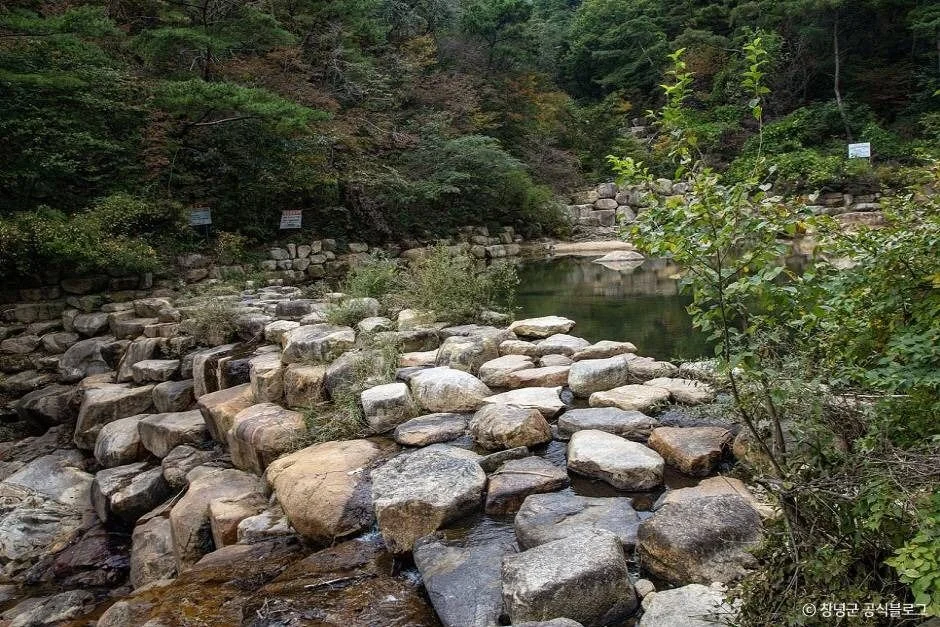
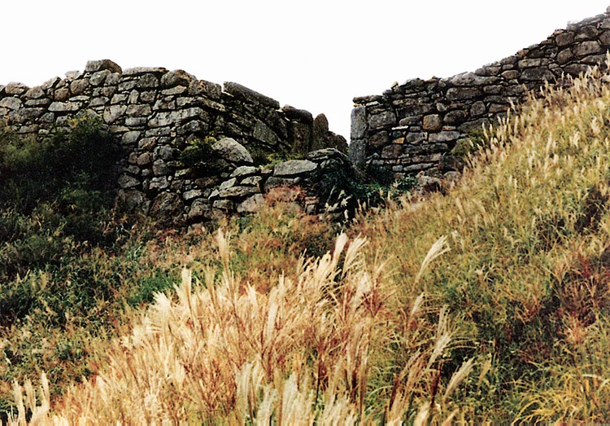
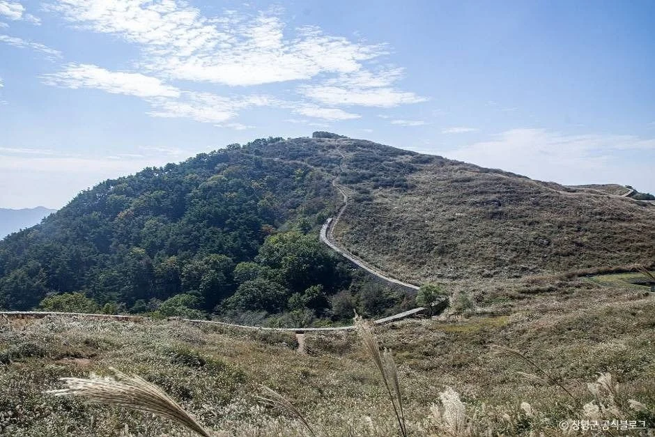
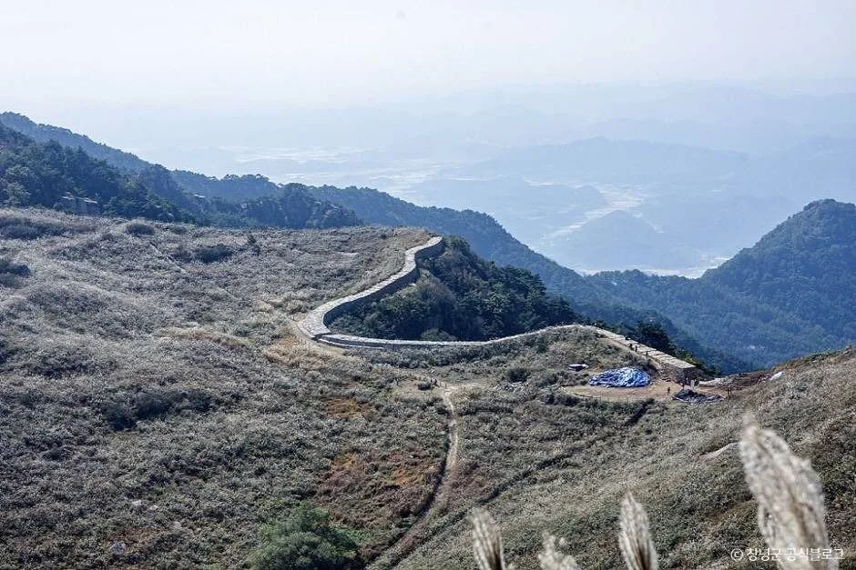
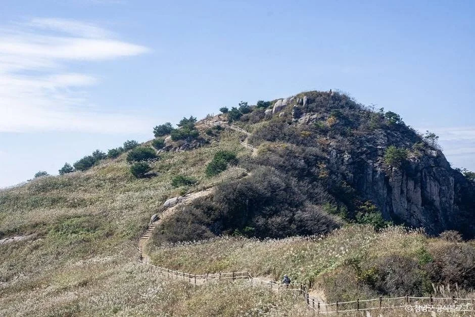
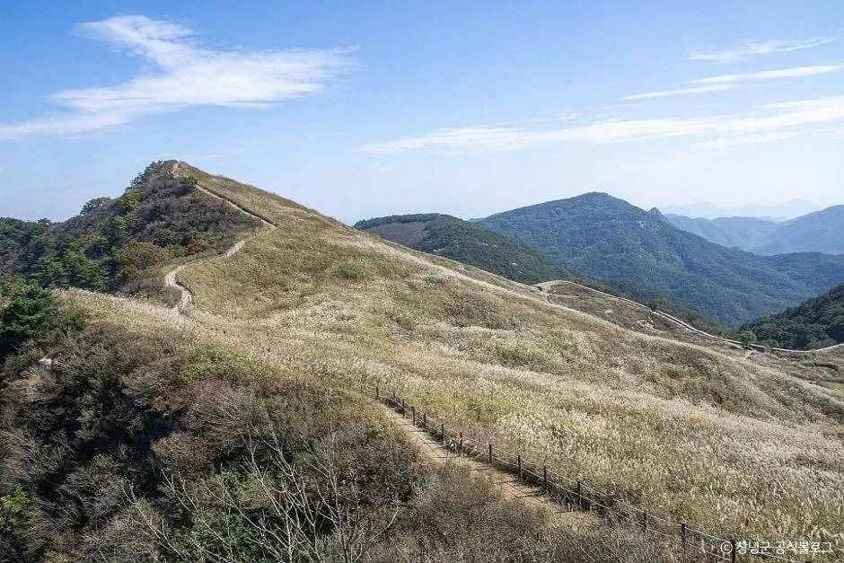
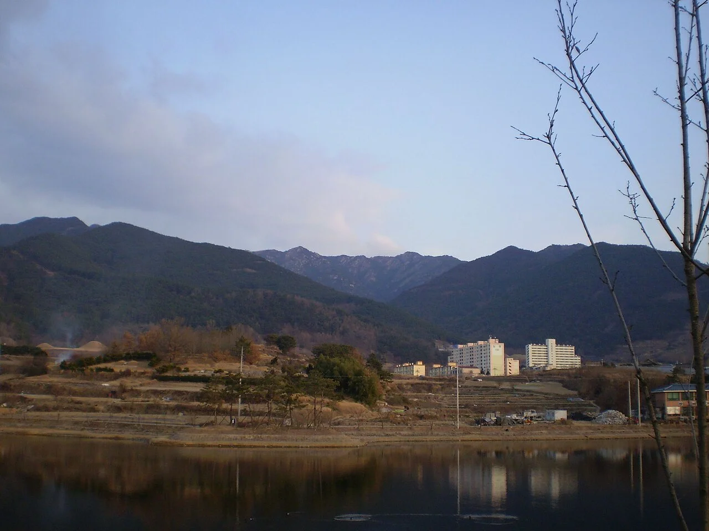
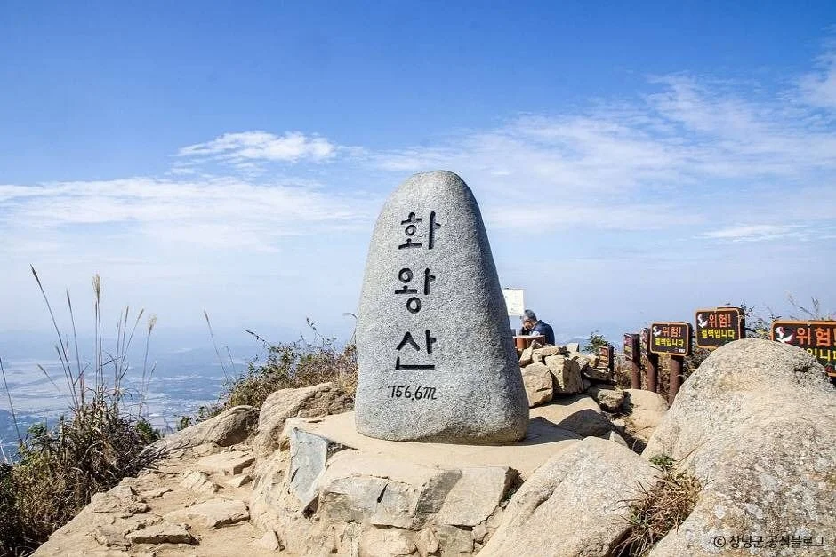
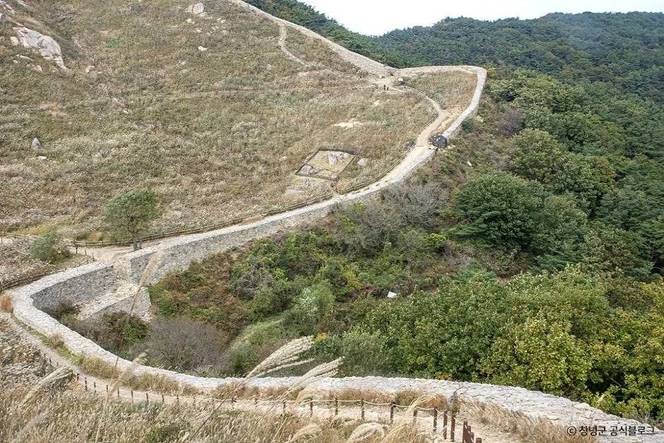

▲ 억새 사이로 난 화왕산 정상부 탐방로
2026년 10월 15일 현재 기준으로 화왕산 억새 산행의 가장 큰 변수는 "어느 입구로 오르느냐"다. 창녕군 누리집이 안내하는 정상(화왕산성)까지 편도 시간은 자하곡 서문길이 2.6km·1시간 30분, 옥천 계곡길이 5.5km·2시간 40분으로 두 배 가까이 차이 난다. 이 글은 창녕군 누리집, 창녕군시설관리공단, 한국관광공사 TourAPI에서 확인되는 값만 모아 자차 기준으로 정리했다. 입장료와 주차요금은 공식 자료에서 찾지 못해 수치를 적지 않았다.
💡 먼저 결론
억새를 보는 곳은 정상부 화왕산성 안쪽 평원이다. 창녕군은 이 억새 평원을 약 18.5ha로 소개하고, 만개 시기를 10월 둘째 주로 예상한다고 적었다. 오늘(10월 15일)은 그 시기가 막 지난 때이니 현장 상태는 출발 전에 확인해야 한다. 짧게 오르려면 자하곡 2코스, 아이·어르신과 함께라면 옥천 1코스가 창녕군 안내상 무난하다. 창녕군 화왕산 안내 바로가기
1. 먼저 확인한 것과 확인하지 못한 것
블로그마다 입장료·시간이 제각각이라 공식 자료를 먼저 열었다. 창녕군 누리집 상세 페이지에는 입장료·개방 시간 항목이 비어 있었고, 한국관광공사 TourAPI에는 이용 시간 "상시 개방", 쉬는 날 "연중무휴", 주차 "가능"만 올라 있다. 창녕군시설관리공단 누리집에도 요금 안내는 없었다. 그래서 요금은 숫자 대신 문의처를 적는다. 한 여행 매체는 화왕산군립공원이 2012년부터 입장료와 주차료를 받지 않는다고 소개했지만, 군·공단의 공식 안내로는 확인하지 못해 이 글의 표에서는 "확인되지 않음"으로 둔다.

▲ 화왕산 일대 계곡 풍경. 옥천·자하곡 두 방향 모두 계곡을 낀 구간이 있다 사진=한국관광공사
| 항목 | 확인 결과 | 출처 |
|---|---|---|
| 정상 해발 | 756.6m(정상석 표기), 공단 안내는 757m | 정상석·창녕군시설관리공단 |
| 억새 평원 | 화왕산성 안쪽 약 18.5ha, 만개 예상 10월 둘째 주 | 창녕군 누리집 |
| 이용 시간·휴무 | 상시 개방, 연중무휴 | 한국관광공사 TourAPI |
| 입장료 | 확인되지 않음 | 공식 안내 없음 |
| 주차요금 | 확인되지 않음(주차 가능만 확인) | 공식 안내 없음 |
| 2026년 입산 통제 | 공지 확인되지 않음 | 창녕군·공단 누리집 |
| 문의 | 군청 산림녹지과 055-530-1661, 자하곡 055-532-1970, 옥천 055-536-1971 | 군·공단 누리집 |
문의 번호는 출처마다 조금씩 달랐다. TourAPI는 산림녹지과 055-530-1662를 적었고 창녕군 누리집은 055-530-1661을 적었다. 위 표는 군 누리집 번호를 따랐다. 공단 화왕산 안내 바로가기
2. 코스별 거리·소요 시간 — 편도 1시간 30분에서 2시간 50분
창녕군 누리집의 등산코스 페이지에는 매표소 두 곳(자하곡·옥천)에서 시작하는 다섯 코스가 있다. 아래 시간은 군이 안내한 정상까지 편도 값이며, 왕복·휴식 시간은 포함되지 않았다. 체력과 날씨에 따라 달라지므로 하산 시간까지 넉넉히 잡자. 창녕군 등산코스 바로가기
| 코스 | 출발 | 거리 | 소요 시간 | 특징(창녕군 안내 요약) |
|---|---|---|---|---|
| 자하곡 1 (전망대길) | 자하곡 매표소 | 3.3km | 1시간 50분 | 바위 구간에 안전 난간·밧줄이 있어 가장 어려운 편 |
| 자하곡 2 (서문길) | 자하곡 매표소 | 2.6km | 1시간 30분 | 가장 많이 찾는 주등산로이자 거리가 가장 짧음, 산림욕장 이후 계단 구간 |
| 자하곡 3 (도성암길) | 자하곡 매표소 | 2.6km | 1시간 50분 | 자하곡 코스 중 가장 평탄하고 그늘이 많아 하산로로 많이 이용 |
| 옥천 1 (계곡길) | 옥천 매표소 | 5.5km | 2시간 40분 | 계곡을 따라 시작, 대부분 임도라 아이·노약자에 적합 |
| 옥천 2 (용선대길) | 옥천 매표소 | 6km | 2시간 50분 | 관룡사까지 임도, 용선대 이후 가파른 계단 |
▲ 억새 사이로 난 화왕산 정상부 탐방로. 난간이 설치돼 있어 길을 벗어나지 않고 걸을 수 있다 사진=한국관광공사
옥천 쪽은 군 안내에 코스별 요령이 붙어 있다. 옥천 1코스는 일야봉산장을 조금 지나 왼쪽 등산로를 타면 옥천삼거리를 거치지 않아 시간을 줄일 수 있고, 옥천 2코스는 관룡사까지 임도이며 용선대 이후 가파른 계단이 이어진다. 관룡산을 함께 다녀올 수 있다는 설명도 있다. 공단 안내에는 옥천 쪽 경로가 옥천삼거리·옥천계곡을 거쳐 동문으로 오르는 길과 관룡사·용선대 또는 병풍바위를 거쳐 관룡산·동문으로 가는 길로, 자하곡 쪽은 도성암 또는 산림욕장을 거치는 길과 산림욕장·전망대·장군바위계곡을 거치는 길로 소개돼 있다.
가장 현실적인 조합은 자하곡 2코스로 오르고 3코스로 내려오는 순환이다. 오르막 2.6km, 하산 2.6km라는 점은 군 안내로 확인되지만, 두 코스를 이은 총시간은 따로 제시되지 않았다. 옥천 쪽은 편도 5.5km 이상이라 왕복하면 10km가 넘는다는 계산이 나온다. 해가 짧은 10월 하순 이후에는 오후 늦게 출발하는 일정을 피하는 편이 안전하다.
✅ 코스 고르는 기준
· 시간이 짧다 → 자하곡 2코스(편도 1시간 30분)
· 아이·어르신 동행 → 옥천 1코스(임도 중심)
· 무릎이 불안하다 → 하산은 자하곡 3코스
· 바위 구간이 부담스럽다 → 자하곡 1코스는 피하기
3. 억새는 어디에, 언제 — 화왕산성 안쪽 평원

▲ 화왕산성 돌 성벽(사적 제64호) 아래로 억새가 우거진 비탈 사진=문화재청(공공누리 제1유형), 위키미디어 커먼즈
억새 군락지는 정상부를 둘러싼 화왕산성 안쪽의 평원이다. 창녕군 누리집은 면적을 약 18.5ha로, 만개 시기를 10월 둘째 주로 "예상"한다고 적었다. 이는 안내 페이지 기준의 예측일 뿐 올해 실제 개화 상태를 보장하지 않는다. 같은 페이지는 실시간 상황을 창녕군 소식 누리집의 영상 메뉴에서 볼 수 있다고 안내한다. 산림청 단풍 예측과 달리 억새 절정을 공식 예보하는 자료는 찾지 못했다.

▲ 화왕산성 성곽이 능선을 따라 이어지는 풍경 사진=한국관광공사
| 항목 | 값 | 비고 |
|---|---|---|
| 군락지 | 정상부 화왕산성 안쪽 평원 | 창녕군 누리집 |
| 면적 | 약 18.5ha | 창녕군 누리집 |
| 만개 예상 | 10월 둘째 주 | 예측일 뿐, 올해 상태는 별도 확인 |
| 실시간 확인 | 창녕군 소식 누리집 영상 메뉴 | 군 안내 |
| 성곽 | 화왕산성(사적 제64호) | 공단 안내 |
10월 15일은 군 예상 시기에서 일주일가량 지난 시점이다. 억새는 만개 후에도 한동안 남지만 얼마나 남는지는 바람·비에 좌우되므로 정확한 기간을 적을 수 없다. 군 영상 메뉴에서 최근 모습을 보고 출발하자.

▲ 정상부를 둘러싼 성곽 안쪽으로 억새 평원이 넓게 펼쳐진다 사진=한국관광공사
4. 자차 진입과 주차 — 자하곡·옥천 두 입구
주차장은 매표소 근처 두 곳이다. 자하곡 매표소는 창녕읍 말흘리 35, 옥천 매표소는 창녕읍 옥천리 618-1로 군 상세 페이지에 나와 있다. 공단 페이지의 도로명 주소는 자하곡 창녕읍 자하곡길 10, 옥천 창녕읍 계성화왕산로 638이다. 내비게이션에는 매표소 이름이나 이 주소를 넣는 것이 안전하다.
| 구분 | 자하곡 | 옥천 |
|---|---|---|
| 주소(공단) | 창녕읍 자하곡길 10 | 창녕읍 계성화왕산로 638 |
| 주차 면수(군 안내) | 378대 | 550대 |
| 주차 면수(공단 안내) | 313대 | 448대 |
| 주차요금 | 확인되지 않음 | 확인되지 않음 |
| 대중교통 | 시내버스 남창교 하차 후 도보 약 10분(공단), 창녕순환버스 창녕여자중·고등학교 하차 후 도보 5분(군) | 영신버스터미널 출발 옥천행 시내버스 종점(1일 운행 횟수는 군 4회·공단 6회로 안내가 달라 확인 필요) |
| 매표소 전화 | 055-532-1970 | 055-536-1971 |
주차 면수는 군과 공단의 숫자가 다르다. 어느 쪽이 최신인지 확인하지 못해 두 값을 모두 적었다. 억새철 주말에는 두 곳 모두 붐빌 수 있으므로 오전 일찍 도착하는 편이 낫다는 정도만 말할 수 있고, 실제 만차 시간대 자료는 찾지 못했다. 다른 지역 억새 드라이브까지 비교하고 싶다면 전국 억새 드라이브 코스 글이, 가까운 합천의 억새 산이 궁금하다면 황매산 억새 글이 참고가 된다.

▲ 정상 인근 바위 봉우리로 이어지는 탐방로 사진=한국관광공사
5. 입산 통제와 안전 — 출발 전 공지부터
2026년 10월 15일 현재 화왕산의 입산 통제 공지는 창녕군·공단 누리집에서 찾지 못했다. 다만 이는 "통제가 없다"는 확인이 아니다. 산림 지역은 산불 위기경보 단계에 따라 입산이 제한될 수 있으므로 방문 직전 군 산림녹지과(055-530-1661)나 매표소에 확인하자. 억새 관련 행사 일정도 올해 공식 안내를 확인하지 못해 적지 않는다.

▲ 억새 언덕을 따라 이어지는 성곽 길. 일부 구간은 경사가 있다 사진=한국관광공사
✅ 억새 산행 안전 체크
· 난간 안쪽 탐방로로만 걷기(억새밭 무단 진입 금지)
· 자하곡 1코스는 바위 구간이 있어 어린이·초보자 비추천
· 정상부는 바람을 막아 줄 곳이 적어 겉옷 준비
· 해 지기 전 하산, 헤드랜턴·물 지참
· 화기(담배·버너) 휴대 주의
화기 주의를 강조하는 이유도 있다. 2009년 2월 9일 오후 6시 20분경 화왕산 억새태우기 행사 중 불길이 관람객을 덮쳐 사상자가 났고, 취재 보도는 당시 방화선이 발표보다 좁았다고 지적했다. 정확한 인명 피해 수치는 이번에 공식 자료로 확인하지 못해 적지 않는다. 지금은 억새밭에서 불씨 하나도 조심해야 한다는 사례로만 짚는다. 당시 취재 기록 바로가기
정상부는 능선이 넓게 열려 있어 바람이 센 날 체감온도가 많이 떨어진다. 이 부분은 공식 수치가 아닌 일반적인 산행 주의 사항이다.
6. 함께 묶을 곳 — 우포늪과 정상 인증 포인트

▲ 창녕 시가지 방향에서 바라본 화왕산 사진=Visviva(퍼블릭 도메인), 위키미디어 커먼즈
정상에는 "화왕산 756.6m"라고 새긴 정상석이 있다. 하루 일정에 여유가 있으면 창녕의 대표 습지 우포늪을 묶는 방법이 있다. 우포늪은 별도로 정리한 글이 있어 창녕 우포늪 새벽 물안개 가이드에서 확인할 수 있다. 화왕산 매표소와 우포늪 사이의 정확한 이동 시간은 공식 자료로 확인하지 못했으니 내비게이션으로 확인하자.

▲ 화왕산 정상석(756.6m) 사진=한국관광공사

▲ 성곽을 따라 억새 평원으로 이어지는 길 사진=한국관광공사
✅ 출발 전 체크리스트
· 입장료·주차요금은 공식 확인 불가, 현장·전화 확인
· 코스 편도 시간: 자하곡 2코스 1시간 30분, 옥천 1코스 2시간 40분
· 억새 만개 예상은 10월 둘째 주(예측), 상태는 군 영상 메뉴 확인
· 입산 통제 공지는 방문 직전 군청 055-530-1661 확인
· 주차 면수는 군·공단 안내가 달라 오전 일찍 도착
요약
- 억새 군락지는 정상부 화왕산성 안쪽 평원으로 약 18.5ha, 군은 만개를 10월 둘째 주로 예상했다(예측일 뿐).
- 정상까지 편도는 자하곡 2코스 2.6km·1시간 30분, 옥천 1코스 5.5km·2시간 40분.
- 입장료·주차요금·2026년 입산 통제 공지는 공식 자료에서 확인하지 못했다.
- 주차 면수는 자하곡 378대(군)/313대(공단), 옥천 550대(군)/448대(공단)로 안내가 다르다.
- 이 글은 2026년 10월 15일 기준이며, 출발 전 창녕군 산림녹지과 055-530-1661 확인을 권한다.